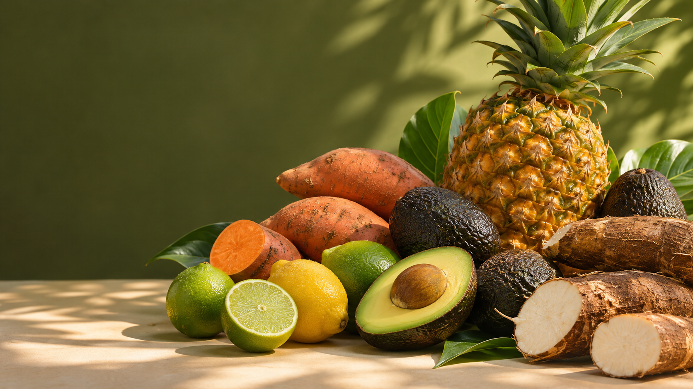
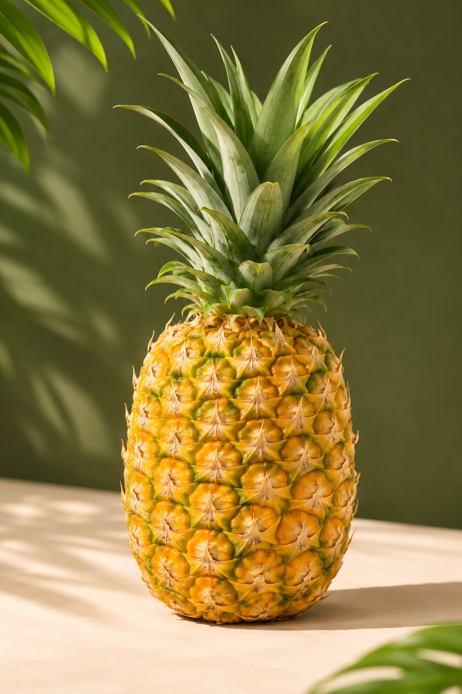
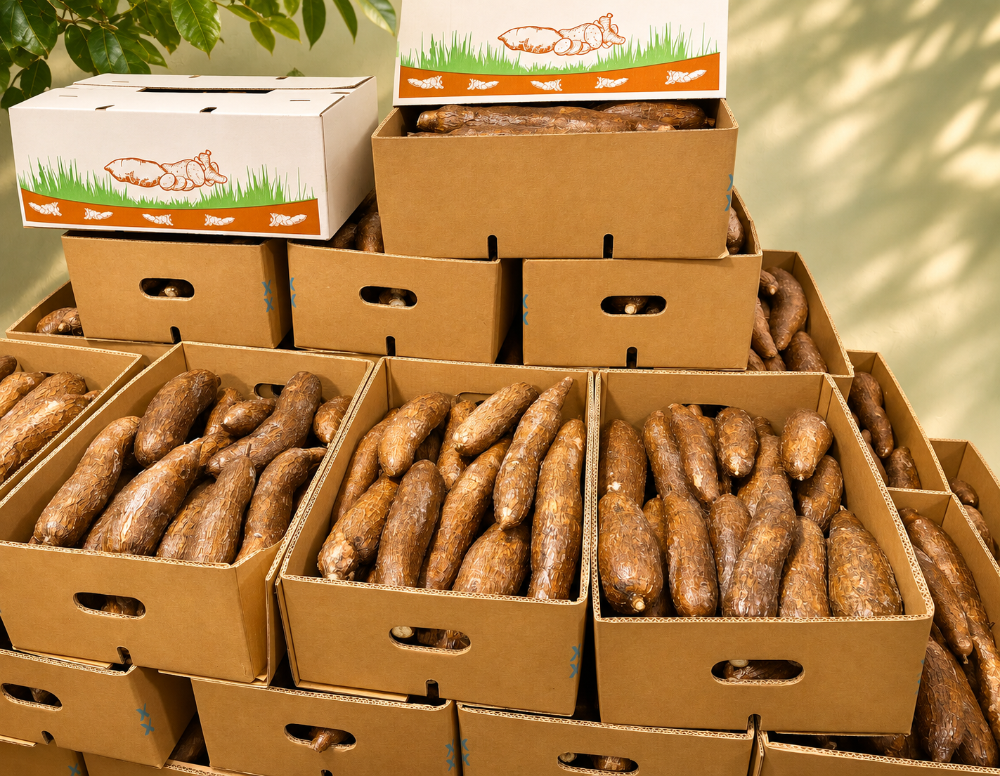

DISPONIBLE
Piña MD2
Dulzor, color y frescura tropical.

PANAMÁ · FRUTAS Y VEGETALES FRESCOS
Conectamos productos del campo con mercados que exigen calidad, cuidado y atención comercial cercana.
Explorar productosSelección · Coordinación · Confianza
* DESDE EL ORIGEN HASTA TU MERCADO
En Fruveg del Pacífico tratamos cada operación con atención a los detalles: desde la selección del producto hasta la coordinación comercial de la entrega.
Conoce nuestra forma de trabajar →* NUESTRO PORTAFOLIO
Frutas y vegetales frescos para importación y exportación, seleccionados de acuerdo con las necesidades de cada mercado.
Ver todos los productos
* DISPONIBILIDAD BAJO CONSULTA
Consulta por volumen, calibres, presentación y condiciones de entrega.
DISPONIBLE
Dulzor, color y frescura tropical.

DISPONIBLE
Presentación seleccionada para una cadena de suministro confiable.
PORTAFOLIO EN CRECIMIENTO
Más frutas y vegetales frescos para nuevos mercados.
* EL VALOR DE HACERLO BIEN
Detrás de cada producto hay una relación que buscamos cuidar: con productores, aliados, clientes y los mercados a los que llegamos.

* QUIÉNES SOMOS
Somos una empresa panameña enfocada en acercar frutas y vegetales frescos a nuevas oportunidades comerciales. Nos mueve la seriedad en el servicio y la confianza de hacer las cosas con claridad.